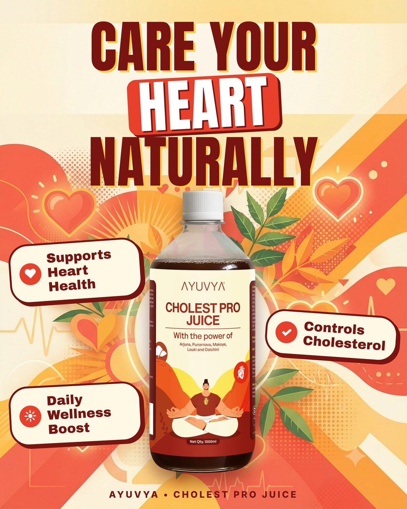
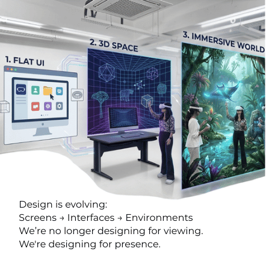
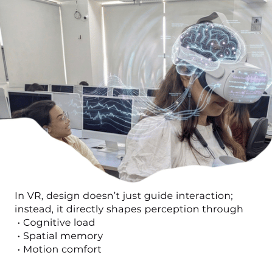

02
Brand posts
Social creatives from a graphic design assignment for Ayurveda House Pvt Ltd (Ayuvya). Bold type, product-first, loud colour.

Ayuvya: Cholest Pro Juice"Care your heart naturally." Warm Ayurvedic palette with benefit call-outs.

imfresh: Whole Body Deodorant Cream"Love at first sniff." High-energy pop-art direction for a younger audience.


Social carousel
"From Screens to Spaces": an 8-slide Instagram carousel on designing for virtual reality, mixing photography, AI imagery and clean type.


View full-size in Canva →